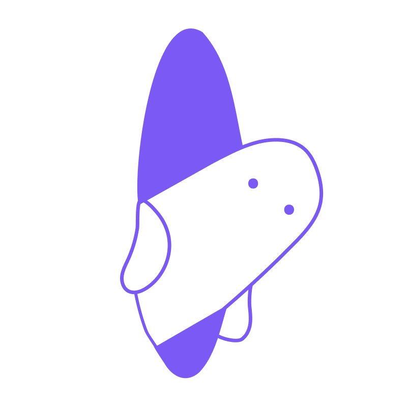
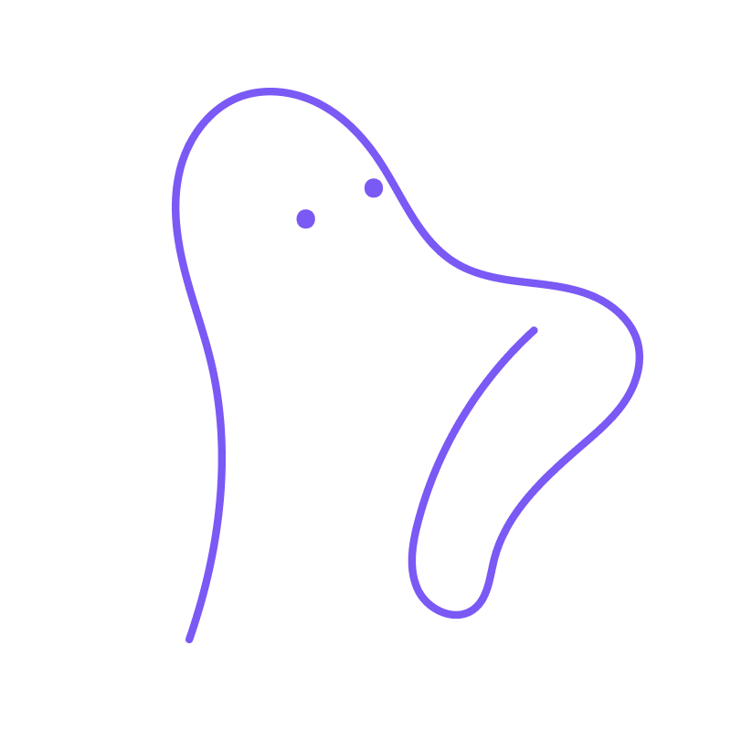
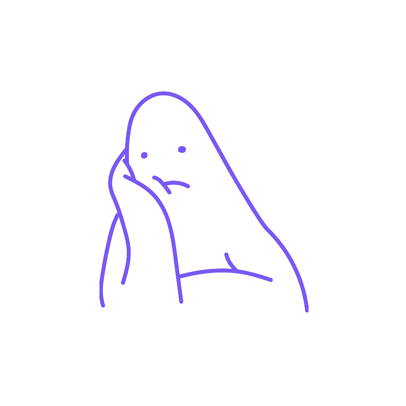
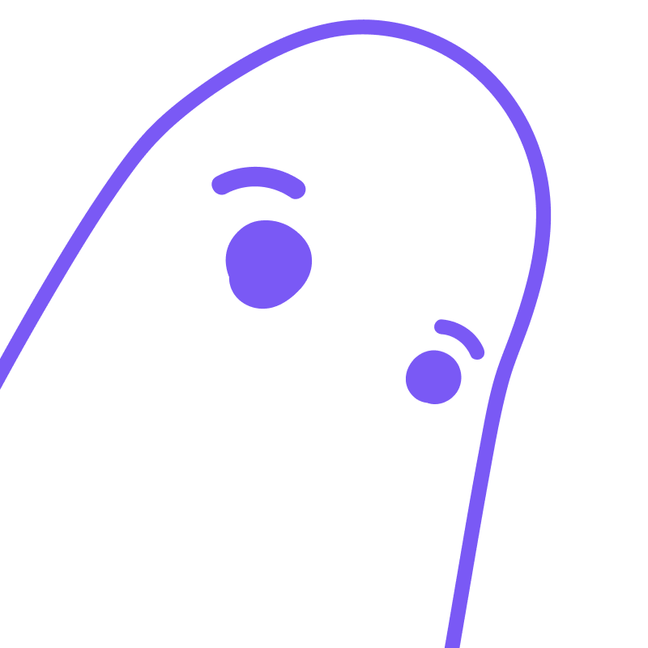
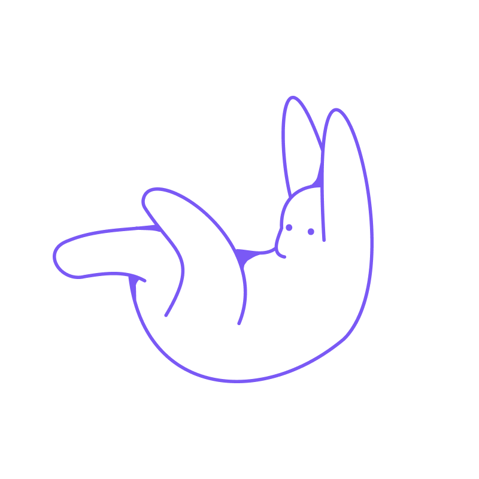

1Cucù, il gruppo si riattiva
Fase 1. Il gruppo WhatsApp, muto da anni, si riattiva: “Ragazzi, facciamo una cena?” Quarantasette reazioni. Tre risposte. Una è un 👍.

Mino “cucù” (specchiato) sbuca da sotto la linea e guarda la pallina che vibra come un telefono: il gruppo muto da anni torna in vita.
2Il vecchio amico
Fase 2. I primi cinque minuti: “Sei sempre uguale!”

Detto a persone che hanno cambiato città, lavoro, taglio di capelli e, in un caso, cognome.
Mino “appoggiato 2” mette il gomito sulla pallina con confidenza, come si fa con un vecchio compagno di classe.
3Nessuno fa il primo passo
Fase 3. Si parla di parcheggio, traffico e locale. Nessuno chiede “E tu, che fai adesso?”: lo aspettano tutti ma nessuno vuole fare il primo passo.

Alla fine un’anima pia prenota in un posto che non costi neanche troppo.
E così...
Mino “annoiato” accanto alla pallina, mento sulla mano: aspetta che sia qualcun altro a spingerla.
4Tutti a tavola
Fase 4. A metà cena ognuno riprende il ruolo di una volta. Il simpatico fa il simpatico. Il preciso divide il conto. Chi spariva, sparisce alle 22:30.
Chi ha figliato in cuor suo inizia a farsi domande sulle amicizie future della prole.
Mino a mezzobusto dietro la pallina, che diventa il piatto. Coltello e forchetta in mano, la linea tratteggiata fa da bordo del tavolo. Schizzo disegnato da me sullo stile di Mino: da far ridisegnare all’illustratore.
5Io non c’ero
Fase 5. “Ti ricordi quella volta che...” Tre versioni dello stesso pomeriggio. Uno giura di non esserci stato.
Nessuna è verificabile; tutte sono vere per chi le racconta.

Mino “zoom” spunta dall’angolo in basso con lo sguardo incredulo rivolto verso l’alto, verso la pallina: è quello che giura di non esserci stato.
6La pallina cade, Mino pure
Fase 6. Alle 23:40, abbracci e promesse: “Dobbiamo rifarlo presto!”, “Organizzo io!”. Quattro lo pensano davvero (forse). Uno scriverà nel gruppo domani.
La prossima cena è tra undici anni.

La pallina scivola oltre la fine della linea e Mino “cade” la segue giù: fine della serata, ci si rivede tra undici anni.